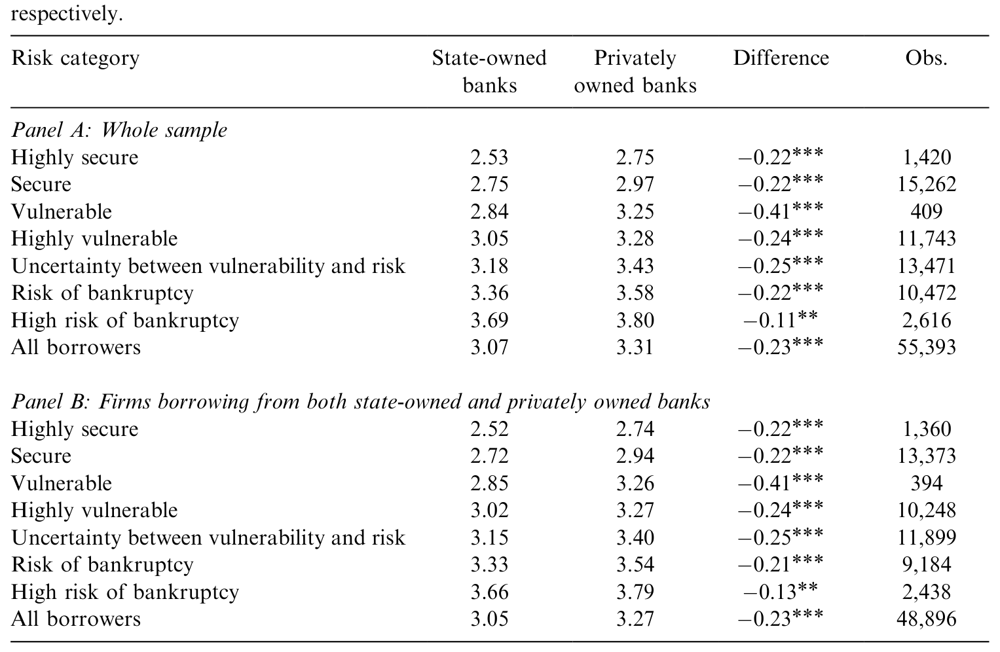
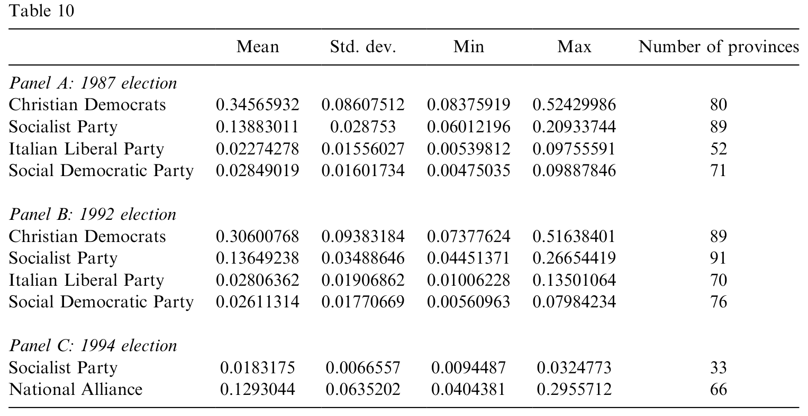
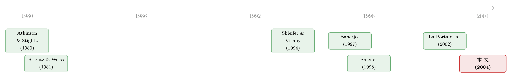

利率更低，反而更可疑——一张意大利信贷账本里的「政治分红」
本文读的是 Sapienza (2004, Journal of Financial Economics)：用意大利逐笔贷款合约的数据，作者发现国有银行对资质完全相同的企业，收取的利率比私有银行低约 44 个基点；而且哪家国有银行所属政党在某地越强势，它在那里放的贷款利率就越低。低利率听上去是好事，作者却论证：这恰恰是「政治分红」，而非市场失灵的修补。
1 一个让人犯嘀咕的「好消息」
先抛一个问题：如果你发现，国家控股的银行，对企业收的利息比私人银行还便宜，你的第一反应是什么？
多数人会觉得这是好事。市场上总有一些项目，私人银行因为算不过来账、或者怕风险而不愿放贷；国家出面，把钱以更低的成本送到这些被冷落的企业手里，填补了「市场失灵」——这正是教科书里国有企业 (state-owned enterprises, SOEs) 存在的正当理由，也是经济学里所谓的社会观 (social view)。
但这篇论文从头到尾,都在跟这个温情脉脉的直觉较劲。作者 Paola Sapienza 想问的是一个更尖锐的问题：
国有银行更便宜的利率，到底是在「补市场的漏」，还是在「发政治的红包」？
这两种解释，从结果上看几乎一模一样——都是国有银行把钱以更低的价格放出去。难就难在，光看「便宜」这个事实，你根本分不清背后是善意还是私心。这正是全文的核心张力，也是它最聪明的地方：它不去争论国有银行是好是坏，而是设计了一套办法，让数据自己把这两种动机分开。
2 为什么「看利润」行不通
接着，一个自然的问题是：要判断国有银行有没有效率，为什么不直接看它赚不赚钱？
意大利的国有银行确实更不赚钱。引用 De Bonis (1998) 的数据：1995 年国有银行的坏账占银行资本的 57.2%，几乎是私有银行（30.2%）的两倍；本文样本里中位数国有银行的不良贷款率是 6.91%，高于私有银行的 5.25%，资产回报率 0.34% 也低于私有的 0.51%。
但作者一针见血地指出：盈利能力本身无法区分三种理论。 一家国有银行利润低，可能是因为它在追求更广的社会目标（社会观），可能是因为管理层激励太弱、出工不出力（代理观 (agency view)），也可能是因为它在迎合政客、把钱送给「自己人」（政治观 (political view)）。三种故事都能解释「利润低」，所以利润这把尺子是钝的。
于是作者换了个角度：不看银行整体的业绩，而是钻进一笔笔具体的贷款合约里去。 这是整篇文章方法论上的第一个关键转身。
3 识别策略：让两家银行给「同一家公司」报价
真正关键的一步在于：怎样把「银行的动机不同」和「企业的资质不同」这两件事彻底分开？
如果国有银行的客户天生就更安全，那它收低利率不过是「便宜货便宜卖」，跟政治毫无关系。要排除这种可能，作者用了一个近乎完美的设计——配对样本 (matching)。
她依托意大利 Centrale dei Bilanci (CdB) 这个机构的两套数据：记录 5 万多家企业资产负债表的 Company Accounts Dataset (CAD)，以及登记每一笔超过 8000 万里拉贷款合约的 Credit Register (CR)。关键是，CdB 用线性判别分析给每家企业打了一个风险评分（即 Altman (1968) 的 z-score 体系），这个评分所有银行在放贷前都能看到，且被证明对预测企业存活相当准确（Altman et al., 1994 的命中率约 87.6%–92.6%）。
这一步是整个识别的命门：既然国有和私有银行看到的是完全相同的企业风险信息，那么它们给同一家企业开出的利率差，就不可能来自「评估能力」的差异——只能来自目标的差异。
具体怎么配？对每一笔国有银行的贷款（company–bank–year），作者去找一笔私有银行的贷款来配对：
- 如果这家企业同时向国有和私有银行借过钱，就拿它和自己配对——同一家公司、同一年、同样的风险分，左手国有右手私有，直接比利率；
- 如果它只向国有银行借，就找一家同行业、同地区（北/中/南）、Altman 风险分相同、规模相近的企业，且产权性质一致（国企配国企，私企配私企）。
最后筛出 6,968 家企业、110,786 个 company–bank–year 观测，国有与私有借款各 55,393 笔，两边企业在雇员数、销售额、杠杆、覆盖率上的均值没有一个统计上显著的差异——两组企业像得几乎可以互换。这正是这套设计的漂亮之处。
（把「关系」与「目标」算进一国信贷总账的思路，也可参见《银行为什么舍得先亏本拉客？》。）
4 主要结果：便宜，而且「该贵的地方没贵」
然后，数据给出了答案。作者把利率定义为企业每季度向银行支付的（利息加费用）除以季度平均贷款余额，再减去基准利率 (prime rate)：
$$ r_{ibt} \;=\; \frac{\text{Payment}_{ibt}}{\text{Balance}_{ibt}} \;-\; \text{Prime}_{t} $$
按风险类别分组后（见表 3），结论很清楚：在每一个风险档位上，国有银行的利率都更低。 全样本所有借款人，国有银行平均利率 3.07%，私有银行 3.31%，差距 -0.23 个百分点；只看那些同时向两类银行借钱的企业（Panel B），是 3.05% 对 3.27%，同样 -0.23，且都在 1% 水平上显著。控制了银行与企业特征后，回归调整出来的平均差距约为 44 个基点。

Table 3: reports the average interest rate, minus the prime rate, charged by both
但真正点题的，不是「便宜」，而是便宜的方向。如果是社会观——政府想补市场的漏——那低利率应该流向那些被私人市场冷落、最缺钱、最高风险的小企业。可数据恰恰相反：
- 大企业拿到的折扣更大。 越是大型企业，越能从国有银行那里借到便宜钱。一个真正想修补市场失灵的政府，没理由偏爱本就不缺融资渠道的大公司。
- 南方企业受益更多。 意大利南方（Mezzogiorno）一向被认为政治庇护 (patronage) 更盛行（Ginsborg, 1990）；国有银行对南方企业的折扣，在控制了信贷约束之后依然存在。
- 甚至那些本来就能从私人银行借到钱的企业，也照样从国有银行拿到了更便宜的贷款。 这就尴尬了：既然私人市场没有失灵（它们明明借得到钱），国有银行的低利率就补不了任何「漏」。
于是反转出现：低利率不是流向「市场够不着的角落」，而是流向「政治上值得讨好的对象」。 社会观在这里被数据反驳了。
5 压垮社会观的最后一根稻草：选票
到这一步，挑剔的读者仍可以辩解：也许社会型政府就是想把钱导向南方的落后地区，大企业雇人多、社会回报高也说得通。社会观还没完全死。
但真正杀死它的，是作者最后亮出的那张牌——选举结果。
她从报纸中手工识别了 36 家国有银行董事长的政党归属，再接上内政部档案里 1989、1992、1994 三次选举、覆盖意大利 95 个省（相当于美国的 county）的得票数据。然后问了一个社会观完全无法解释的问题：
同一家国有银行，在它所属政党更强势的地区，会不会放出更便宜的贷款？
答案是：会。与银行关联的政党在某地的得票率越高，这家银行在那里收取的利率就越低。 更狠的是，作者证明这个结果对同时加入银行固定效应和企业固定效应都稳健——也就是说，它不是被某些银行天生爱放低息贷款、或某些企业天生优质这类遗漏变量驱动的。在控制掉「这家银行」和「这家企业」的一切固定特征之后，剩下的，就只有政治。

Table 10: shows the electoral results for these five parties in the provinces where
一个追求社会福利的政府，没有任何理由让贷款利率随着执政党的选票多寡而上下浮动。能解释这一点的，只有政治观：国有银行是政客手里的工具，用来向支持者输送资源、巩固选票。这也呼应了 Shleifer & Vishny (1994) 所说的，SOE 本质上是政客实现私人目标的机制。
6 文献脉络
把这篇论文放回它所在的思想长河，会看得更清楚。
最早，国有企业的理论根基是社会观：Atkinson & Stiglitz (1980) 从公共经济学出发，论证政府介入是为了矫正市场失灵；Stiglitz & Weiss (1981) 关于信贷配给的经典工作，则为「为什么信贷市场会失灵、因而需要公共金融机构」提供了微观基础。这条线把国有银行看作善意的修补匠。
接着，一个根本性的反叛来自 Shleifer & Vishny (1994) 的《Politicians and Firms》：他们提出政治观，把政客重新设定为追求选票和私利的自利个体，SOE 不过是输送庇护的渠道。Shleifer (1998) 进一步把「国有 vs 私有」的取舍系统化。与此同时，Banerjee (1997) 和 Hart, Shleifer & Vishny (1997) 发展出代理观——哪怕政府心怀善意，官僚体系内部的激励缺失也会导致资源错配。

到了世纪之交，La Porta, Lopez-de-Silanes & Shleifer (2002) 用跨国数据证明：政府对银行的所有权在全世界普遍存在，且与更差的金融发展和增长相关——但这是宏观相关性，说不清机制。本文正好补上了这块最难的拼图：它不靠跨国回归，而是钻进一国之内的逐笔贷款合约，用配对样本 + 政党选票，第一次把「政治分红」这个机制干净地识别了出来。它站在 Shleifer-Vishny 政治观的延长线上，却是用微观证据把这条理论钉死的那一锤。
7 评论与延伸（Q&A + 研究方向）
(a) 几个可能的疑问
Q：国有银行利率更低，难道不可能只是因为它资金成本更低、或愿意接受更低回报吗？
这正是配对设计要排除的。作者比的不是两家银行的平均利率，而是同一家企业（或风险分、行业、地区、规模都相同的两家企业）从两类银行拿到的利率。资金成本之类的银行层面差异，会被「政党选票」那一步进一步过滤——因为它在加入银行固定效应后依然成立。
Q：政治观和代理观到底差在哪？两者不是都预测「资源错配」吗？
关键在错配的原因。代理观说，错配是因为公共经理偷懒、或为私利挪用资源（激励问题）；政治观说，错配本身就是目的——把钱定向输送给政客的支持者。选票那个结果是分水岭：经理偷懒解释不了「为什么利率会随执政党得票率系统性变化」，只有刻意的政治输送才能。
Q：44 个基点听起来不大，值得这么大动干戈吗？
单笔看是小数，但它是系统性、定向的。国有银行掌握了意大利 58% 的银行资产，这个折扣常年、成规模地流向大企业和政治上重要的地区，累积起来就是一国信贷配置的扭曲。这也与 La Porta et al. (2002) 发现的「广泛国有银行 → 金融发展落后」在量级上自洽。
Q：南方企业拿到便宜钱，难道不能用社会观解释（政府想扶持落后地区）？
单独看可以。作者也坦承，大企业折扣能套进代理观、南方折扣能套进社会观。但没有任何一种善意理论能解释「利率随关联政党的选票浮动」。正是这个无法被善意解释的事实，把天平决定性地压向政治观。
Q：把企业「和自己配对」会不会有选择偏误——同时向两类银行借钱的公司本身就特殊？
有这个顾虑，所以作者同时报告了「全样本」和「只看双向借款企业」两组（表 3 的 Panel A 与 B），两者差距都是
-0.23且高度一致。再加上对只向国有银行借款企业的同行业、同地区、同风险分配对，结论在多种配对口径下不变。
Q：这是 2004 年的意大利，对今天还有意义吗？
机制是普适的。只要存在政府控股的金融机构 + 选举政治，「信贷作为政治庇护工具」的逻辑就会重演——从新兴市场的国有银行到各种政策性贷款项目。识别政治如何扭曲信贷价格，这套配对 + 政治变量的思路至今仍是范本。
(b) 几个可能的研究问题与提案
1. 政治信贷扭曲会传导到公司债市场吗？
【经济故事】本文只看了银行贷款。如果政治关联企业能从国有银行拿到更便宜的贷款，那它们在公开债市场上的信用利差会不会也更低（投资者预期「政治保护」≈ 隐性担保）？这等于给隐性担保定一个价。 【可行性】中。需要把企业的政治关联（董事政党、地区执政党）匹配到债券发行与二级市场利差。新兴市场（如中国、印度）国企债 + 选举/任命数据可行；难点在干净地度量「政治强度」。
2. 外资银行进入，能否削弱政治信贷？
【经济故事】本文把外资银行一律归为私有。一个自然延伸：当一国放开外资银行进入，政治关联企业失去的低息贷款，是被外资以市场价格补上，还是干脆借不到了？这能直接检验「外资作为去政治化的力量」。 【可行性】中到高。多国银行业开放有明确的时间断点，可做双重差分 (difference-in-differences, DiD)；逐笔贷款数据是瓶颈，但部分国家的信贷登记系统已可获得。
3. 政治信贷的真实后果：选票买来了，但企业更高效了吗？
【经济故事】本文止于「利率被政治扭曲」，没追到下游。拿到政治折扣的企业，事后是创造了就业、还是变成了僵尸企业？这关系到这笔「政治分红」的社会净成本。 【可行性】高。把配对样本向后延展，跟踪受惠企业的雇佣、投资、存活率即可；识别上可借用选举的外生波动作为政治折扣的工具变量。
4. 监管独立性能不能切断这条暗线？
【经济故事】本文提到 1993 年后意大利国有银行管理层名义上独立于中央政府，但庇护实践据信仍存活。一个干净的问题是：提升金融监管/银行任命的独立性，能否真正削弱政治信贷？ 【可行性】中。需要监管独立性改革的时间或地区断点（关于这条线，可参见《选不选他，决定了银行什么时候倒》），配合本文式的逐笔利率数据。
最后说说我作为评述者的判断。
贡献：这篇文章最大的价值，不在于「发现国有银行利率更低」这个事实，而在于它把一个长期纠缠不清的理论之争，变成了一个可被数据裁决的实证问题。同样是「便宜的信贷」，社会观、代理观、政治观给出三种道德上截然不同的解读；作者用配对样本剥掉了企业资质的干扰，又用政党选票这个无法被善意解释的变量，给政治观钉上了最后一颗钉子。这种「用一个理论无法解释的事实来证伪它」的设计，是实证金融里最优雅的手法之一。
对识别的担忧：我有两点保留。其一，政党归属是从报纸手工识别的 36 家银行董事长，样本小且可能有测量误差与选择性——能被识别政治关联的银行，未必能代表全部。其二，选举得票率虽然外生于单家企业，却未必外生于地区的经济基本面：政党强势的地区，可能本身经济结构就不同，从而企业风险被 Altman 分数没完全捕捉到的部分所驱动。作者用固定效应缓解了大部分，但「选票—利率」这条关系若能找到更外生的政治冲击（如突发的政党更替、丑闻），会更有说服力。
后续想看到的：我最想知道这笔政治折扣的真实经济后果。利率被压低 44 个基点，是养活了本该被淘汰的企业，还是真的撬动了南方的就业与投资？把识别从「价格扭曲」推进到「实体后果」，才能给「国有银行作为政治工具」算出一张完整的福利账单。
参考文献
Atkinson, A.B., Stiglitz, J.E. (1980). Lectures on Public Economics. London, McGraw Hill.
Altman, E.I. (1968). Financial ratios, discriminant analysis and the prediction of corporate bankruptcy. Journal of Finance 23, 589–609.
Altman, E.I., Giancarlo, M., Franco, V. (1994). Corporate distress diagnosis: comparisons using linear discriminant analysis and neural networks (the Italian experience). Journal of Banking and Finance 18, 505–529.
Banerjee, A. (1997). A theory of misgovernance. Quarterly Journal of Economics 112, 1289–1332.
De Bonis, R. (1998). Public sector banks in Italy: past and present. Bank of Italy, unpublished manuscript.
Ginsborg, P. (1990). A History of Contemporary Italy: Society and Politics, 1943–1988. Penguin Books, London.
Hart, O., Shleifer, A., Vishny, R. (1997). The proper scope of government: theory and an application to prisons. Quarterly Journal of Economics 112, 1127–1162.
La Porta, R., Lopez-de-Silanes, F., Shleifer, A. (2002). Government ownership of banks. Journal of Finance 57(1), 256–301.
Sapienza, P. (2002). The effect of banking mergers on loan contracts. Journal of Finance 57(1), 329–368.
Sapienza, P. (2004). The effects of government ownership on bank lending. Journal of Financial Economics 72(2), 357–384.
Shleifer, A. (1998). State versus private ownership. Journal of Economic Perspectives 12, 133–150.
Shleifer, A., Vishny, R.W. (1994). Politicians and firms. Quarterly Journal of Economics 109, 995–1025.
Stiglitz, J.E., Weiss, A. (1981). Credit rationing in markets with imperfect information. American Economic Review 71, 393–410.